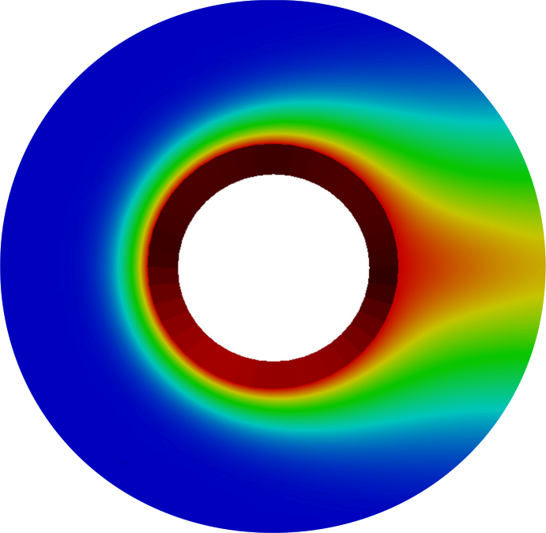

- PRINCIPLES of CODE CONSTRUCTION
- PETSc SCIENTIFIC LIBRARY for NUMERICS
- MOOSE SCIENTIFIC LIBRARY for PHYSICS
limited engagement · 18–20 August
REGISTER at CSE.ILLINOIS.EDU/TRAINING
|  |
Scientific Software Developmenta SHORT COURSE for ENGINEERS and RELUCTANT CODERS |
limited engagement · 18–20 August
REGISTER at CSE.ILLINOIS.EDU/TRAINING